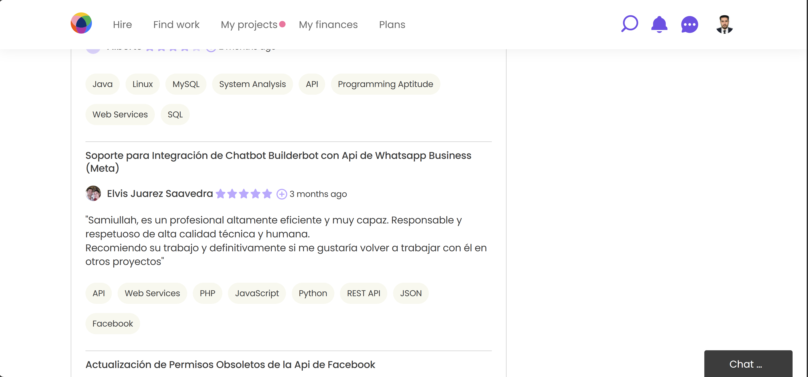
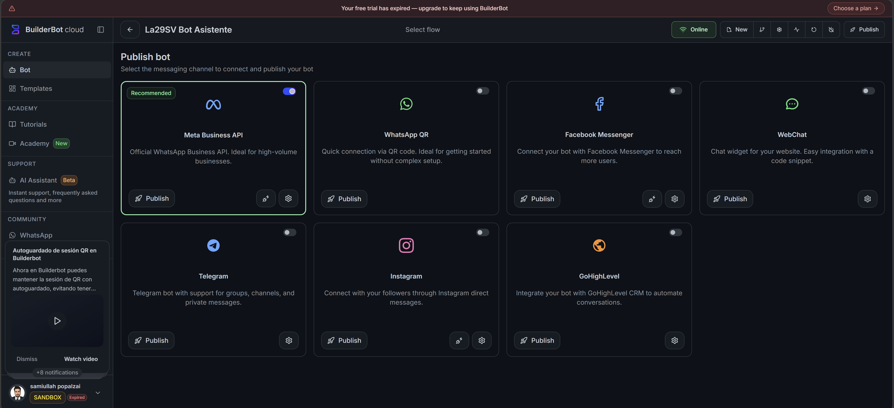
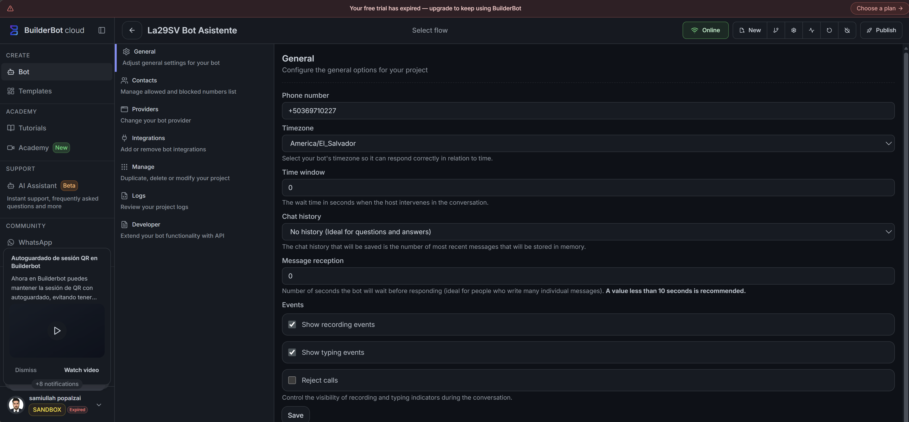

Tech Stack & Tools
Builderbot Cloud
WhatsApp Business API
Meta Business Manager
AI Agent Configuration
The WhatsApp Business chatbot is built using Builderbot Cloud platform with AI agent configuration for automated conversations. The bot is integrated with Meta's official WhatsApp Business API and is currently in production for Elvis Juarez Saavedra's automotive parts marketing agency. The solution handles customer inquiries, lead generation, and automated responses at scale while maintaining full compliance with Meta's policies.
My Role
For this project, I was responsible for configuring the AI agent within Builderbot Cloud platform. I integrated the official WhatsApp Business API from Meta, ensuring seamless communication between the bot and WhatsApp's infrastructure. I also assisted the client with the Meta Business account verification process, which was essential for production deployment.
The bot is now successfully in production for Elvis Juarez Saavedra's automotive parts marketing agency. The integration ensures that high message volumes are handled efficiently without any negative impact on the WhatsApp account. My role covered AI agent configuration, API integration, Meta Business verification assistance, and ongoing production support.
Client Review on Workana

Complete Case Study
Production Ready
Bot successfully deployed and running in production environment
Meta Verified
Client's Meta Business account successfully verified
API Integrated
Official WhatsApp Business API fully configured and active
Stable Operation
High message volume handled without account issues
Elvis Juarez Saavedra, operating an automotive parts marketing agency, needed a WhatsApp chatbot solution that could handle customer inquiries, lead generation, and automated responses at scale. The primary challenge was ensuring that the bot could operate in production without risking WhatsApp account restrictions due to high message volumes.
I configured an AI agent within Builderbot Cloud platform and integrated Meta's official WhatsApp Business API. This required assisting the client with Meta Business account verification, setting up the WhatsApp Business Account (WABA), and configuring webhooks for message handling. The bot is now fully operational in production.
The main challenge was ensuring stability and efficiency when handling high message volumes for the automotive parts agency. I implemented proper rate limiting, message queue management, and monitoring systems to prevent the WhatsApp account from being flagged or restricted. The solution also includes automatic retry mechanisms for failed messages and real-time health checks.
After successful deployment, the chatbot now handles customer inquiries about spare parts 24/7, automates lead qualification, sends product catalogs, and manages appointment scheduling — all while keeping the WhatsApp account secure and within Meta's compliance guidelines. The client's marketing agency now benefits from improved response times and increased lead conversion rates.


Walkthrough
How I Built The Bot
I started by configuring an AI agent within Builderbot Cloud platform, designing conversation flows tailored to the automotive parts industry. The bot was programmed to handle common customer inquiries, qualify leads, share product catalogs, and schedule appointments — all while maintaining a natural conversational tone.
Next, I integrated Meta's official WhatsApp Business API. This involved assisting the client with Meta Business account verification, creating a WhatsApp Business Account (WABA), and linking it to their designated phone number. I configured webhooks to receive incoming messages and set up the API endpoints for sending responses.
To ensure stability in production, I implemented rate limiting to stay within WhatsApp's API thresholds, a message queue system to handle traffic spikes, automatic retry mechanisms for failed requests, and monitoring dashboards for real-time health checks. The bot was thoroughly tested before going live, and it now runs 24/7 handling customer conversations for the automotive parts marketing agency.